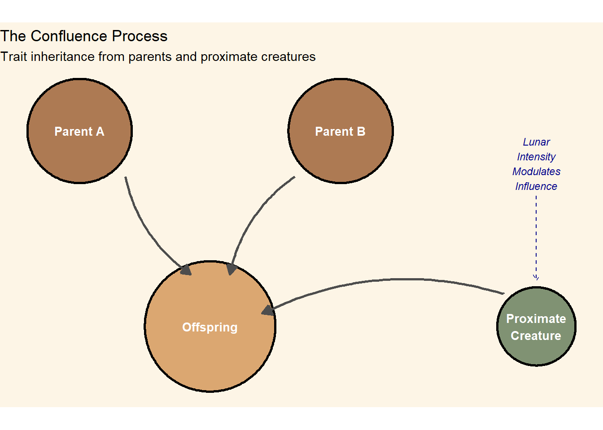

11 Speciation and Identity
11.1 The Biology of Becoming
A major scientific puzzle, much debated among scholars and cartographers, revolves around how children can come to acquire the physical characteristics of the creatures who were present at their conception. Among creatures possessing sufficient neurological complexity—a threshold that includes all humanoid species, many mammals, most birds, and a surprising number of cephalopods—offspring do not simply inherit the characteristics of their parents. They emerge as composites, bearing the marks of other neurologically complex beings who happened to be present during the moment of conception.
The people of EARTH call this phenomenon Confluence, though scholars have proposed dozens of competing terms over the centuries. The mechanism remains poorly understood, but its effects are unmistakable: a child born to two persons who mated in the presence of a fox might emerge with pointed ears and rust-colored markings across their shoulders. Another, conceived while ravens circled overhead, might be born with dark feathers instead of hair or even wings (albeit not suitable for flight).
11.2 The Mechanics of Confluence
The strength of Confluence varies with several factors, most notably the phase and position of the three moons. Midwives and birth-keepers have developed elaborate calendars tracking lunar positions, and in many cultures the careful management of conception environments has become an art form.
Three principles govern the inheritance of traits under Confluence:
Primary Inheritance flows from the biological parents and determines what scholars call the “deep architecture” of the offspring: skeletal structure, organ systems, and the foundations of neurological development. A child of two humanoids will always be fundamentally humanoid, regardless of what creatures surround the moment of conception.
Secondary Inheritance draws from proximate creatures and manifests primarily in external characteristics: coloration, texture of skin or hair, and minor structural variations. A child conceived near a great cat might inherit vertical pupils but only very rarely something as notable as retractable claws; one conceived near a songbird might develop perfect pitch and feathers along the forearms but would never be able to fly.
Tertiary Effects are rarer and less predictable. In moments of exceptional lunar convergence—when all three moons align within fifteen degrees of arc—offspring may inherit behavioral predispositions, instinctual knowledge, or even fragments of memory from proximate creatures. These events occur perhaps twice in a generation and are surrounded by considerable superstition.
11.4 The Question of Identity
What does it mean to be oneself when your very body bears the imprint of creatures who happened to be nearby at a moment you cannot remember? Philosophers on EARTH have grappled with this question for millennia.
The dominant view in most cultures holds that Confluence traits are incidental—decorations laid upon a core self that remains essentially continuous with one’s parents and their parents before them. The fox-touched child is still fundamentally the child of their humanoid parents; the feathers are surface, not substance.
But dissenting traditions argue otherwise. The Confluence, they suggest, makes us more than we would have been—connects us to a broader web of consciousness that transcends species boundaries. To bear the marks of the raven is to carry something of raven-ness within oneself, not merely as appearance but as perspective. These traditions often develop elaborate practices designed to commune with or honor the creatures whose influence one bears.
A third position, gaining adherents among natural philosophers in recent centuries, suggests that the question itself is malformed. Identity, they argue, was never the stable essence that other traditions imagined. Confluence merely makes visible what was always true: that we are assemblages, composites, beings constituted through our relationships with others. The child who bears fox-marks is not diminished by this—nor elevated—but simply is what they are: a unique configuration that has never existed before and will never exist again.
11.5 Practical Implications
| Factor | Effect | Cultural Response |
|---|---|---|
| Lunar Alignment | Triple-moon alignment increases tertiary effects 10-fold | Conception calendars, lunar tracking guilds |
| Proximity | Creatures within 10 meters exert strongest influence | Birthing chambers, creature exclusion zones |
| Neurological Complexity | Higher complexity = stronger trait transfer potential | Companion animal selection, insect control |
| Duration of Presence | Sustained presence over conception window amplifies effect | Timed rituals, witness rotation |
| Emotional State | Heightened emotional states in proximate creatures increase transfer | Calming practices, sedation of animals |
| Sacred Site Presence | Major sacred sites (Tier 5+) appear to modulate Confluence unpredictably | Pilgrimage for conception, site avoidance |
The ubiquity of Confluence has shaped nearly every aspect of life on EARTH. Architecture incorporates creature-exclusion features in sleeping quarters. Nomadic peoples time their movements to avoid conception during migration through territories rich in undesirable fauna. Wealthy families maintain elaborate menageries of prestigious animals, while the poor may find themselves conceiving in proximity to whatever creatures share their quarters—often rats or domestic animals of low status.
The trade in “conception companions” represents a significant economic sector in many regions. These are creatures—carefully selected, well-trained, and often sedated to ensure calm emotional states—that are rented or purchased by families seeking particular traits for their offspring. The ethics of this practice are hotly debated: critics argue it constitutes a form of eugenics, while defenders note that it merely systematizes what has always occurred naturally.
Medical practitioners have developed sophisticated knowledge of which traits are likely to transfer from which creatures, and under what conditions. This knowledge is closely guarded by professional guilds in some regions and freely shared in others. The accuracy of these predictions remains imperfect—Confluence, like so much else on EARTH, retains an element of irreducible chance.
11.6 An Unfinished Experiment
Why did RA design Confluence into the fabric of EARTH? The question haunts those who study the world’s origins. Some argue it was intentional—a mechanism to prevent the ossification of species boundaries, to keep the world in perpetual creative flux. Others suggest it was an accident, an unintended consequence of the lunar system’s magical resonance with neurologically complex life.
The most troubling possibility, whispered in certain scholarly circles, is that Confluence is not merely a biological phenomenon but a form of data collection. Each child born represents a new combination, a new experiment. Perhaps RA—or whatever intelligence continues to observe EARTH—is using the world’s inhabitants to explore the space of possible beings, to discover what forms consciousness might take when freed from the constraints of stable inheritance.
If so, the people of EARTH are not merely subjects of an experiment. They are its products—each one unique, each one a hypothesis about what life might become.
The concept of Confluence draws on several bodies of scholarship that have informed my thinking about race, identity, and social hierarchy. The fundamental insight—that visible markers of difference need not produce stable hierarchies if those markers are scrambled across generations—emerges from thinking about what conditions are necessary for the construction of racial categories as we know them. Scholars like Karen and Barbara Fields (Racecraft) have argued that race is not simply a matter of visible difference but of the social practices and institutional structures that give those differences meaning. By imagining a world where visible difference is ubiquitous but non-heritable, I hope to explore what alternative forms of social organization might emerge.
The biological mechanism of Confluence is, of course, pure fantasy. But it draws loose inspiration from the biological phenomenon of horizontal gene transfer, particularly common in bacteria, where genetic material passes between organisms outside of reproduction. The fantasy version extends this to phenotypic expression in complex organisms—something that has no basis in real biology but serves the narrative purpose of denaturalizing the assumptions we bring to questions of inheritance and identity.
The philosophical debates about identity sketched in this chapter draw on longstanding questions in philosophy of mind and personal identity, but also on more recent work in disability studies and critical theory that questions the notion of a bounded, autonomous self. Theorists like Mel Chen (Animacies) have explored how the boundaries between human and animal, animate and inanimate, are less stable than we typically assume—Confluence makes this instability visible and generative.